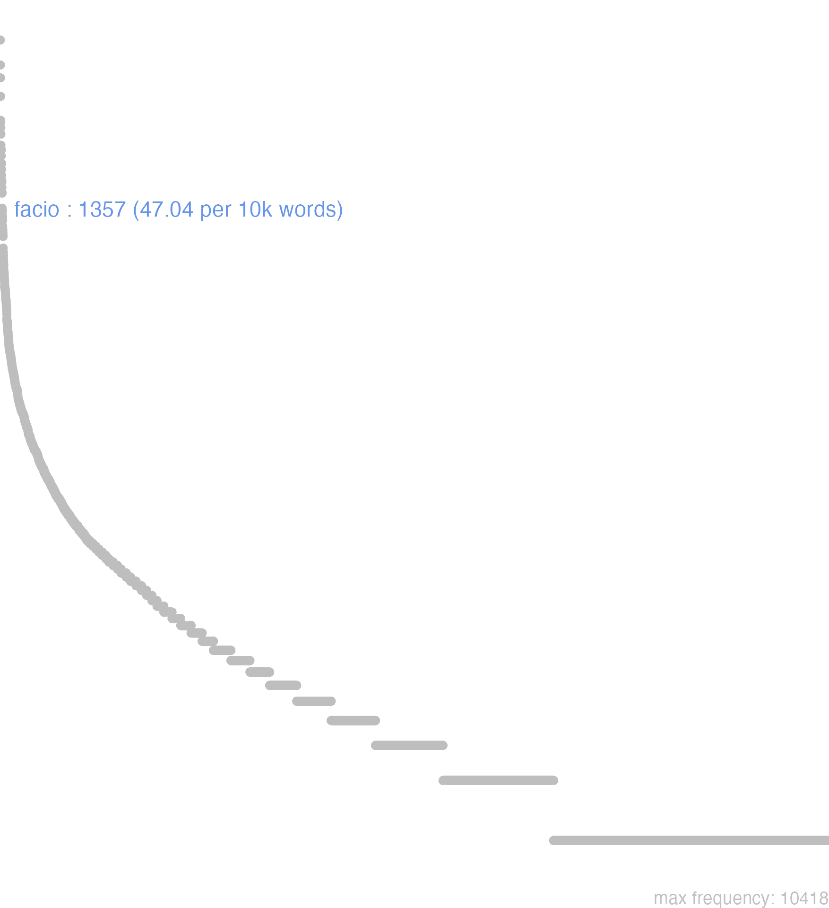

57 facio
57.0.0.1 bases lexicais
id: http://lila-erc.eu/data/id/lemma/102758
classe: verbo
paradigma: 5ª conjugação (tema em -ĭ- breve)
outras grafias:
variantes do lema: fio
facio presente | indicativo | 1ª pessoa singular | voz ativa
facere presente | infinitivo | ativo
faciet futuro | indicativo | 3ª pessoa singular | voz ativa
feci, fecei pretérito perfeito | indicativo | 1ª pessoa singular | voz ativa
factum particípio passado | nominativo neutro singular
facturum particípio futuro | nominativo neutro singular
făcĭō
făcis
făcĕre
fēcī
57.0.0.2 dicionários tradicionais
fac
imperat. de facĭo.
facdum
= fac dum.
v. tr. e intr.
Obs.: o sentido primitivo de ‘pôr’. ‘colocar’. aparece nas expressões: facere magni, facere nihili, i.e., ‘colocar pôr como sendo de grande. ou de nenhum valor’; facere nomen alicui ‘pôr um nome em alguém’: facere aliquem regem ‘colocar como rei’ -e, principalmente, nos seus compostos e derivados. A evolução semântica para ‘fazer’ processou-se através das línguas técnicas. Constrói-se com acus.: com ut, ne, quin ou simples subjuntivo; com inf.; com dois acus.; com gen. de preço; com acus. e inf.; ou intransitivamente.
imperat. de facĭo.
facdum
= fac dum.
1 Faze. pois Plaut. Rud. 1.023.
facĭo -is -ĕre fēcī, factumv. tr. e intr.
Obs.: o sentido primitivo de ‘pôr’. ‘colocar’. aparece nas expressões: facere magni, facere nihili, i.e., ‘colocar pôr como sendo de grande. ou de nenhum valor’; facere nomen alicui ‘pôr um nome em alguém’: facere aliquem regem ‘colocar como rei’ -e, principalmente, nos seus compostos e derivados. A evolução semântica para ‘fazer’ processou-se através das línguas técnicas. Constrói-se com acus.: com ut, ne, quin ou simples subjuntivo; com inf.; com dois acus.; com gen. de preço; com acus. e inf.; ou intransitivamente.
1 I-Sent. próprio Pôr, colocar, e daí: fazer, executar Cés. B. Gal. I, 13, 1; Cíc. Pis. 70; Cés. B. Gal. 2, 3, 3.
2 I-Sent. próprio Produzir, causar, provocar, excitar Cíc. Flac. 83.
3 I-Sent. próprio Exercer, praticar Cíc. Verr. 5, 155.
4 II-Sent. figurado: Trabalhar, produzir. compor C ie. Verr. 5. 63; Cíc. Or. 172.
5 III-Empregos especiais - Na língua poética: Criar. nomear, eleger Cíc. Verr. 2. 132; Cíc. Provo 20.
6 III-Empregos especiais - Na língua poética: Dar, fornecer, obter:
7 III-Empregos especiais - Na língua poética: Sofrer Cíc. Br. 125.
8 III-Em sent. intelectual: Supor. admitir, imaginar C c. Tusc. I. 82.
9 III-Na língua do teatro: Representar, pôr em cena Cíc. Tusc. 5, 115; Ter. Eun. 38.
10 III-Na língua do teatro: Estimar, prezar Cíc. Fin. 2. 88.
11 III-Na língua religiosa: Fazer um sacrifício, sacrificar Verg. Buc. 3. 77.
12 IV-Intr.: Ser eficaz. convir a, fazer bem ou mal, ir bem, ser útil Sen. Ben. I, 3, 10; Cíc. Mil. 9.
13 IV-Intr.: Sacrificar-se, imolar-se Cíc. At. I, 13. 3.
14 IV-Locuções:
15 IV-Com gen. de preço:
[EXEMPLOS]
6
alicui facultatem judicandi Cíc. Verr. 2. 179 ‘dar a alguém a faculdade de julgar’.
14
iter facere Cés. B. Gal. 1, 7, I ‘caminhar’; facere palam Cíc. At. 13,21, 3 ‘divulgar’; facere contra C ie. Quinct. I ‘ser contra’.
15
facere magni Cíc. Q. Fr. I. 2,7 ‘considerar muito’; facere nihili Cíc. Fin. 2, 88 ‘não considerar nada’; facere minimi Cic. Fin. 2. 42 ‘considerar pouco’; facere plurimi Cíc. Fam. 3, 10, 2 ‘considerar no mais alto grau’.
fĕcī
perf. de facĭo.
2 face
imperat. arcaico de facĭo.
2 facis
ind. pres. de facĭo.
Făcĭo -ĭs fēcī fāctŭm făcĕrĕ
v. trans. e intrans.
v. trans. e intrans.
1 commetter;
1 desempenhar, cumprir;
1 executar, levar a effeito, effectuar;
1 fazer de modo que, ter cuidado de, dizer que, mandar, ordenar que;
1 fazer, obrar;
2 compôr;
2 crear, dar, produzir;
2 criar, educar;
2 fabricar, fazer, apparelhar, preparar;
3 crear, instituir;
3 nomear, eleger;
3 tornar, reduzir a um estado qualquer, fazer;
4 practicar, exercer;
5 dar, fazer obter, fornecer;
5 grangear, alcançar, adquirir, obter;
5 trazer, causar, ser o motivo de, excitar, suscitar;
6 adquirir, grangear, ajunctar, arranjar, tomar;
7 ter, soffrer;
8 estimar, prezar, ter na conta de, reputar em;
9 suppôr, fingir, imaginar;
10 sêr ou estar da parte de, seguir um partido, ser por ou contra alguem;
11 adaptar-se a, convir a, sêr bom, fazer bem ter. med., sêr salutar;
11 sêr útil;
12 fazer sacrificio a, sacrificar;
13 andar, percorrer um espaço, completar, passar tempo, viver;
14 Varias locuções.
[EXEMPLOS]
1
admirans cur ita faceret Cic Admirado de que assim procedesse
domi adsitis, facite Ter Fazei por estar em casa
facere bene alicui Plaut. Ter Fazer bem a alguem
facere castra Cic Assentar um acampamento, acampar
facere cenas Cic Preparar banquetes
facere cernere letum Virg Fazer testemunha da morte de alguem
facere facinus Cic Commetter um crime
facere furtum Hor Commetter um furto
facere imperite Cic Proceder ignorantemente
facere incendium Cic Levantar um incendio, incendiar
facere iussa Virg Executar as ordens
facere male alicui Plaut. Ter Fazer mal a alguem
facere officium Cic Cumprir um dever, satisfazer a elle
facere rem diuinam Liv Fazer um sacrificio, sacrificar
facere sacra Cic Fazer um sacrificio, sacrificar
facere sacrificium Cic Fazer um sacrificio, sacrificar
faciam ut potero Cic Farei como poder
facite homines discumbere Hier Mandae sentar essa gente
facito ut sciam Fronto Dá-me a saber
inuitus feci Cic Fiz contra a minha vontade
mel ter inferuere facito Colum Faze ferver tres vezes o mel
nescit quid faciat auro Plaut Não sabe que hade fazer do oiro
quid facerem? Virg Que havia eu de fazer? que podia eu fazer?
quid facies illi? Hor Que lhe farás tu?
quidnam facerent de rebus suis Nep O que deviam fazer em similhante conjunctura
recte aut perperam facere Quint Fazer bem ou mal
2
apelles faciebat Plin Apelles fazia; feito por Apelles fórmula de modestia que os artistas punham nas suas obras, em vez de fecit
facere caseum Colum Fazer queijo
facere caulem Colum Deitar haste
facere gregem asinorum Varr crear gado asinar
facere hominem Hier Crear o homem
facere litteras Just Escrever uma carta
facere muros Hier Levantar muros
facere oleam Cato Crear, cultivar oliveiras;
facere oua Varr Pôr óvos
facere statuam Plin Fazer uma estatua
facere uersus Cic. Hor Compôr versos
facere uinum Colum Fazer vinho
priusquam grana faciat Colum Antes de crear grãos
uulcanum eum quem Alcamenes fecit Plin Aquelle Vulcano estatua de, que Alcumenes fez
3
et me facere poetam Pierides Virg E as Musas tambem me fizeram poeta
fac plebem tuam Ov Grangea a affeição do povo
facere aliquem certum Virg Informar alguem
facere amicissimum Sall Grangear em alguem um grandissimo amigo
facere certiorem Cic Informar alguem
facere desertas uias Hier Tornar desertos os caminhos
facere disertum Cic Fazer eloquente
facere diuiduum Ter Repartir
facere heredem Cic Instituir herdeiro
facere iratum Cic Irritar alguem
facere palam Nep Divulgar, publicar
facere ratum Ov Ratificar
facere regem Just Fazer alguem rei
hi consules facti sunt Liv Estes foram nomeados consules
missa facio… Ter Passo em silencio, omitto…
nihil sibi reliqui facere Cæs Não reservar coisa alguma
quos reliquos fortuna fecerat Liv Os que a fortuna tinha salvado
4
facere argentariam Cic sêr cambista, ou banqueiro
facere medicinam Phaed Exercer a medicina
facere mercaturas Cic Commerciar;
facere stipendia Liv Militar, sêr soldado
5
facere arbitrium Liv Dar coragem, animar
facere audaciam Liv Inspirar ousadia
facere audientiam orationi Cic Fazer prestar attenção a um discurso
facere concitationes Cæs Suscitar perturbações
facere consilii sui copiam Cic Partilhar com alguem o seu projecto
facere copiam argenti… Plaut Arranjar dinheiro
facere fastidium Liv Causar nausea
facere fauorem Liv Grangear o favor
facere fidem orationi Cic Fazer dar credito ás suas palavras
facere fletum Colum Fazer chorar
facere formidinem Tac Metter susto
facere frigora Ov Produzir frio
facere iram Quint Incitar a colera
facere ius alicui Liv Conceder permissão a alguem
facere locum alicui rei Ov. Vell Dar occasião a uma coisa
facere ludos Cic Dar jogos
facere medicinam Plin Trazer remedio
facere modum iræ Liv Aplacar a ira
facere mortem Colum Causar a morte
facere negotium Quint Causar embaraço
facere nomen Liv Pôr nome
facere nomen Cic Dar fiança
facere nomina Cic Dar fiança
facere perniciem Tac Causar a ruina;
facere potestatem alicui Cic Conceder permissão a alguem
facere remedium Plin Trazer remedio
facere risum Quint Provocar o riso
facere sanguinem Liv Fazer correr sangue
facere stellis nomina Virg Dar nomes ás estrellas
facere stomachum Cic Incitar a colera
facere strepitum Ov Produzir ruído
facere umbram Virg Produzir sombra
illum forma timere facit Ov A bellesa fal-o temer
macrescere facit uolucres Varr Faz emmagrecer as aves
quid faciat segetes… Virg O que produz colheitas
6
facere corpus Phaed Engordar
facere diuitias ex re Plaut Enriquecer-se por um meio, tirar riquesas d’uma coisa
facere exercitum Vell Alistar um exercito
facere lucrum Cic Tirar lucro
facere manum Cic Ajunctar gente forças
facere uires Quint Tomar forças
paries uentrem facit Dig A parede faz barriga, bojo
7
facere iacturam, detrimentum Cic Ter um prejuizo, uma perda
facere naufragium Cic Naufragar
8
nihili facio scire Plaut Não se me dá de o saber
quanti Brutum facerem Cic Em que conta eu tinha a Bruto
uoluptatem uirtus minimi facit Cic A virtude não tem em conta alguma o prazer
9
fac animum interire Cic Suppunhamos que a alma é mortal
fac potuisse Cic Suppõe que elle tem podido
fac uelit Stat Suppõe que elle quer
fac uelle Virg Suppõe que eu quero
facio me alias res agere Cic Finjo estar distrahido
feci sermonem inter nos habitum Cic Suppuz que houve entre nós uma conversação
10
ab aduersariis facere Cic Metter-se com os adversarios
auctoritas nobiscum facit Cic Está do nosso lado a auctoridade…
facere aduersus aliquem Nep Sêr contra alguem
facere contra aliquem Cic Sêr contra alguem
mecum facientia iura Hor Direitos que são a meu favor
ueritas cum illo facit Quint A verdade está do seu lado
11
aduersus stomachi dolorem facere Scrib Sêr bom contra as dores do estomago
chamæleon facit ad… Plin A carlina é boa para…
non faciet capiti corona meo Prop Não assentará bem á minha cabeça esta coroa
plurimum facit totas diligenter nosse causas Quint É útil ter profundo conhecimento de todas as causas
remedium optime facit Colum Este remédio é efficacissimo
12
facere Junoni Cic Faer um sacrificio a Juno
quot agnis fecerat? Plaut Quantos anhos tinha elle immolado?
quum faciam uitula Virg Quando eu sacrificar uma novilha
13
annum in fuga fecerat Ulp Tinha andado fugido um anno
cum qua fecit annos nouem Inscr Com a qual viveu nove annos
cursu quingenta stadia facere Just Percorrer quinhentos estadios de carreira
14
cur aper apri faciat Quint Porque Aper faz Apri em genit. Tac
fac si facis Mart Avia-te, despacha-te, acaba com isso, faze se tens a fazer
fac si quid facis Sen Avia-te, despacha-te, acaba com isso, faze se tens a fazer
facere clamores Cic Dar gritos
facere conuitia Ov Injuriar
facere fidem Ved. estas palavras
facere finem Ved. estas palavras
facere fœdus Cic Concluir um tractado
facere fraudem legi Plaut Illudir a lei, violal-a
facere gradum Ved. estas palavras
facere gratiam Ved. estas palavras
facere hostiam Censor Immolar uma victima
facere iter Ved. estas palavras
facere ludos Ved. estas palavras
facere morem Ved. estas palavras
facere noctem de die Titin Fazer da noite dia
facere periculum Ved. estas palavras
facere satis Ved. Satisfacere
facere speciem Liv Ter ar de
facere testes Ter Dar testemunhos
facere uerba Liv. Ov Fallar
facere uerba etc. Ved. estas palavras
facere uerbum Ved. estas palavras
facere urinam Veg Urinar, mijar
si ædes uitium fecerunt Cic Se a casa adquiriu defeito, ou ameaça cair
Facio -is feci factum -ere
1 Cic. fazer, executar.
2 estimar, prezar.
3 sacrificar.
Faxim -is -it -imus -itis -int
Ter. por Faciam, as, & c. e Fecerim, & c. Faxo -is -it -unt
Virg. Plaut. por Faciam, es, et, & c. Plaut. imper. por Fac Face Plaut. por Fecissem Faxem
Facio -is
ejus passivum est Fio: fit in compositis, quae non mutant a in i, ut: Calefacio, Calefio, & c.
ejus passivum est Fio: fit in compositis, quae non mutant a in i, ut: Calefacio, Calefio, & c.
1 fazer, estimar, dar, etc
2 ponitur etiam pro Sacrificare
3 ponitur etiam Factum in responsione pro Ita
[EXEMPLOS]
3
detraxit tibi uestem? Factum
X
aegre alicui facere molestar
alicui gradum facere promover
argentariam facere exercitar o officio de bater moeda, ou de cambiador
copiam, & potestatem facere permittir, conceder
cum aliquo facere seguir, ou favorecer as partes, ou opiniaõ de alguem
fac ita esse seja assim, ou dou-vos que assim seja pormittentis, & concedentis est locutio
facere ad aliquid ser de proveito, ou utilidade para alguma cousa
facere iacturam, uel damnum padecer jactura, ou dano
gratiam alicuius rei facere perdoar alguma cousa
haud muto factum naõ me arrependo, naõ mudo de parecer
iudex omnibus sui conueniendi potestatem, uel copiam facit deixa entrar todos para tratarem com elle seus negocios
modum alicuius rei facere naõ ser nimio em alguma cousa
ne longum faciam i, ut breviter dicam
periculum facere experimentar, provar, tentar
stipendia sub aliquo facere militar, ou ser soldado de alguem
uela facere dar á vela
uitium facere dicitur aedificium, cùm aliqua parte labefactatur
Faxim et c. -is
pro Faciam, facias, vel fécerim, féceris, & c. Faxo, pro fut. Indic. faciam.
Facio
1 pro conuenio
[EXEMPLOS]
1
lex facit ad me
lex facit pro me
1 fazer
Facio is -eci actum Faxit faxint
pro fecerit. fecerint.
57.0.0.3 dados de corpus
![This chart plots collocate by scoreSUBST, for the headword facio here are all the values plotted: collocate: sum; scoreSUBST: 0. collocate: ut; scoreSUBST: 0. collocate: certus; scoreSUBST: 0. collocate: impetus; scoreSUBST: 3. collocate: non; scoreSUBST: 0. collocate: quis; scoreSUBST: 0. collocate: iter; scoreSUBST: 3. collocate: idem; scoreSUBST: 0. collocate: satis; scoreSUBST: 0. collocate: is; scoreSUBST: 0. collocate: possum; scoreSUBST: 0. collocate: ita; scoreSUBST: 0. collocate: proelium; scoreSUBST: 3. collocate: si; scoreSUBST: 0. collocate: mentio; scoreSUBST: 3. collocate: potestas; scoreSUBST: 2. collocate: bene; scoreSUBST: 0. collocate: saepe; scoreSUBST: 0. collocate: conor; scoreSUBST: 0. collocate: debeo; scoreSUBST: 0. collocate: finis; scoreSUBST: 2. collocate: insidiae; scoreSUBST: 2. collocate: uerbum; scoreSUBST: 2. collocate: recte; scoreSUBST: 0. collocate: polliceor; scoreSUBST: 0. collocate: facinus; scoreSUBST: 2. collocate: iniuria; scoreSUBST: 2. collocate: rogo; scoreSUBST: 0. collocate: uoluntas; scoreSUBST: 2. collocate: pax; scoreSUBST: 2. collocate: loco; scoreSUBST: 0. collocate: reus; scoreSUBST: 2. collocate: consultum; scoreSUBST: 2. collocate: diues; scoreSUBST: 0. collocate: oro; scoreSUBST: 0. collocate: facilis; scoreSUBST: 0. collocate: aliter; scoreSUBST: 0. collocate: nondum; scoreSUBST: 0. collocate: adhuc; scoreSUBST: 0. collocate: sapiens; scoreSUBST: 1](./Media/wordcloud__xx102-97-99-105-111xx__BY_collocate_scoreSUBST.webp)
![This chart plots collocate by scoreADJ, for the headword facio here are all the values plotted: collocate: sum; scoreADJ: 0. collocate: ut; scoreADJ: 0. collocate: certus; scoreADJ: 3. collocate: impetus; scoreADJ: 0. collocate: non; scoreADJ: 0. collocate: quis; scoreADJ: 0. collocate: iter; scoreADJ: 0. collocate: idem; scoreADJ: 0. collocate: satis; scoreADJ: 0. collocate: is; scoreADJ: 0. collocate: possum; scoreADJ: 0. collocate: ita; scoreADJ: 0. collocate: proelium; scoreADJ: 0. collocate: si; scoreADJ: 0. collocate: mentio; scoreADJ: 0. collocate: potestas; scoreADJ: 0. collocate: bene; scoreADJ: 0. collocate: saepe; scoreADJ: 0. collocate: conor; scoreADJ: 0. collocate: debeo; scoreADJ: 0. collocate: finis; scoreADJ: 0. collocate: insidiae; scoreADJ: 0. collocate: uerbum; scoreADJ: 0. collocate: recte; scoreADJ: 0. collocate: polliceor; scoreADJ: 0. collocate: facinus; scoreADJ: 0. collocate: iniuria; scoreADJ: 0. collocate: rogo; scoreADJ: 0. collocate: uoluntas; scoreADJ: 0. collocate: pax; scoreADJ: 0. collocate: loco; scoreADJ: 0. collocate: reus; scoreADJ: 0. collocate: consultum; scoreADJ: 0. collocate: diues; scoreADJ: 2. collocate: oro; scoreADJ: 0. collocate: facilis; scoreADJ: 2. collocate: aliter; scoreADJ: 0. collocate: nondum; scoreADJ: 0. collocate: adhuc; scoreADJ: 0. collocate: sapiens; scoreADJ: 0](./Media/wordcloud__xx102-97-99-105-111xx__BY_collocate_scoreADJ.webp)
![This chart plots collocate by scoreVERBO, for the headword facio here are all the values plotted: collocate: sum; scoreVERBO: 4. collocate: ut; scoreVERBO: 0. collocate: certus; scoreVERBO: 0. collocate: impetus; scoreVERBO: 0. collocate: non; scoreVERBO: 0. collocate: quis; scoreVERBO: 0. collocate: iter; scoreVERBO: 0. collocate: idem; scoreVERBO: 0. collocate: satis; scoreVERBO: 0. collocate: is; scoreVERBO: 0. collocate: possum; scoreVERBO: 2. collocate: ita; scoreVERBO: 0. collocate: proelium; scoreVERBO: 0. collocate: si; scoreVERBO: 0. collocate: mentio; scoreVERBO: 0. collocate: potestas; scoreVERBO: 0. collocate: bene; scoreVERBO: 0. collocate: saepe; scoreVERBO: 0. collocate: conor; scoreVERBO: 2. collocate: debeo; scoreVERBO: 2. collocate: finis; scoreVERBO: 0. collocate: insidiae; scoreVERBO: 0. collocate: uerbum; scoreVERBO: 0. collocate: recte; scoreVERBO: 0. collocate: polliceor; scoreVERBO: 2. collocate: facinus; scoreVERBO: 0. collocate: iniuria; scoreVERBO: 0. collocate: rogo; scoreVERBO: 2. collocate: uoluntas; scoreVERBO: 0. collocate: pax; scoreVERBO: 0. collocate: loco; scoreVERBO: 2. collocate: reus; scoreVERBO: 0. collocate: consultum; scoreVERBO: 0. collocate: diues; scoreVERBO: 0. collocate: oro; scoreVERBO: 2. collocate: facilis; scoreVERBO: 0. collocate: aliter; scoreVERBO: 0. collocate: nondum; scoreVERBO: 0. collocate: adhuc; scoreVERBO: 0. collocate: sapiens; scoreVERBO: 0](./Media/wordcloud__xx102-97-99-105-111xx__BY_collocate_scoreVERBO.webp)
![This chart plots collocate by scoreADV, for the headword facio here are all the values plotted: collocate: sum; scoreADV: 0. collocate: ut; scoreADV: 0. collocate: certus; scoreADV: 0. collocate: impetus; scoreADV: 0. collocate: non; scoreADV: 2. collocate: quis; scoreADV: 0. collocate: iter; scoreADV: 0. collocate: idem; scoreADV: 0. collocate: satis; scoreADV: 3. collocate: is; scoreADV: 0. collocate: possum; scoreADV: 0. collocate: ita; scoreADV: 2. collocate: proelium; scoreADV: 0. collocate: si; scoreADV: 0. collocate: mentio; scoreADV: 0. collocate: potestas; scoreADV: 0. collocate: bene; scoreADV: 2. collocate: saepe; scoreADV: 2. collocate: conor; scoreADV: 0. collocate: debeo; scoreADV: 0. collocate: finis; scoreADV: 0. collocate: insidiae; scoreADV: 0. collocate: uerbum; scoreADV: 0. collocate: recte; scoreADV: 2. collocate: polliceor; scoreADV: 0. collocate: facinus; scoreADV: 0. collocate: iniuria; scoreADV: 0. collocate: rogo; scoreADV: 0. collocate: uoluntas; scoreADV: 0. collocate: pax; scoreADV: 0. collocate: loco; scoreADV: 0. collocate: reus; scoreADV: 0. collocate: consultum; scoreADV: 0. collocate: diues; scoreADV: 0. collocate: oro; scoreADV: 0. collocate: facilis; scoreADV: 0. collocate: aliter; scoreADV: 2. collocate: nondum; scoreADV: 1. collocate: adhuc; scoreADV: 2. collocate: sapiens; scoreADV: 0](./Media/wordcloud__xx102-97-99-105-111xx__BY_collocate_scoreADV.webp)
![This chart plots collocate by scoreFUNC, for the headword facio here are all the values plotted: collocate: sum; scoreFUNC: 0. collocate: ut; scoreFUNC: 30. collocate: certus; scoreFUNC: 0. collocate: impetus; scoreFUNC: 0. collocate: non; scoreFUNC: 0. collocate: quis; scoreFUNC: 0. collocate: iter; scoreFUNC: 0. collocate: idem; scoreFUNC: 0. collocate: satis; scoreFUNC: 0. collocate: is; scoreFUNC: 0. collocate: possum; scoreFUNC: 0. collocate: ita; scoreFUNC: 0. collocate: proelium; scoreFUNC: 0. collocate: si; scoreFUNC: 10. collocate: mentio; scoreFUNC: 0. collocate: potestas; scoreFUNC: 0. collocate: bene; scoreFUNC: 0. collocate: saepe; scoreFUNC: 0. collocate: conor; scoreFUNC: 0. collocate: debeo; scoreFUNC: 0. collocate: finis; scoreFUNC: 0. collocate: insidiae; scoreFUNC: 0. collocate: uerbum; scoreFUNC: 0. collocate: recte; scoreFUNC: 0. collocate: polliceor; scoreFUNC: 0. collocate: facinus; scoreFUNC: 0. collocate: iniuria; scoreFUNC: 0. collocate: rogo; scoreFUNC: 0. collocate: uoluntas; scoreFUNC: 0. collocate: pax; scoreFUNC: 0. collocate: loco; scoreFUNC: 0. collocate: reus; scoreFUNC: 0. collocate: consultum; scoreFUNC: 0. collocate: diues; scoreFUNC: 0. collocate: oro; scoreFUNC: 0. collocate: facilis; scoreFUNC: 0. collocate: aliter; scoreFUNC: 0. collocate: nondum; scoreFUNC: 0. collocate: adhuc; scoreFUNC: 0. collocate: sapiens; scoreFUNC: 0](./Media/wordcloud__xx102-97-99-105-111xx__BY_collocate_scoreFUNC.webp)
![This charts plots the frequency of lemma by author_Frequencies. The Hieronymus subcorpus registers the highest normalized frequency, with the value of 89.87 and an absolute frequency of 40. The Caesar subcorpus follows, with a normalized frequency of 65.34 and an absolute frequency of 173. the subcorpus with the least normalized frequency is Vergilius with the normalized value of 15.44 and an absolute freqeuncy of 8. here are all the values: subcorpus: Caesar ; normalized frequency: 173 ; absolute frequency: 65.3372611224413. subcorpus: Cicero ; normalized frequency: 748 ; absolute frequency: 46.597393536169. subcorpus: Horatius ; normalized frequency: 38 ; absolute frequency: 33.7447828789628. subcorpus: Ovidius ; normalized frequency: 10 ; absolute frequency: 17.1585449553878. subcorpus: Phaedrus ; normalized frequency: 25 ; absolute frequency: 37.95354486109. subcorpus: Sallustius ; normalized frequency: 67 ; absolute frequency: 62.1463686114461. subcorpus: Seneca ; normalized frequency: 241 ; absolute frequency: 44.9786304846867. subcorpus: Suetonius ; normalized frequency: 2 ; absolute frequency: 22.0507166482911. subcorpus: Tacitus ; normalized frequency: 5 ; absolute frequency: 17.164435290079. subcorpus: Vergilius ; normalized frequency: 8 ; absolute frequency: 15.4440154440154. subcorpus: Hieronymus ; normalized frequency: 40 ; absolute frequency: 89.8674455178612](./Media/barchart__xx102-97-99-105-111xx__lemma_BY_author_Frequencies.webp)
![This charts plots the frequency of lemma by genre_Frequencies. The Prosa.ficcional subcorpus registers the highest normalized frequency, with the value of 89.87 and an absolute frequency of 40. The Prosa.histórica subcorpus follows, with a normalized frequency of 60.13 and an absolute frequency of 247. the subcorpus with the least normalized frequency is Poesia.épica with the normalized value of 15.44 and an absolute freqeuncy of 8. here are all the values: subcorpus: Prosa.histórica ; normalized frequency: 247 ; absolute frequency: 60.128045960223. subcorpus: Prosa.filosófica ; normalized frequency: 302 ; absolute frequency: 49.7520633926953. subcorpus: Prosa.oratória ; normalized frequency: 454 ; absolute frequency: 43.589718971129. subcorpus: Prosa.epistolográfica ; normalized frequency: 215 ; absolute frequency: 56.9702429847108. subcorpus: Poesia.lírica ; normalized frequency: 41 ; absolute frequency: 34.4914612602002. subcorpus: Poesia.didática ; normalized frequency: 32 ; absolute frequency: 27.1439477479006. subcorpus: Poesia.trágica ; normalized frequency: 18 ; absolute frequency: 15.6358582348853. subcorpus: Poesia.épica ; normalized frequency: 8 ; absolute frequency: 15.4440154440154. subcorpus: Prosa.ficcional ; normalized frequency: 40 ; absolute frequency: 89.8674455178612](./Media/barchart__xx102-97-99-105-111xx__lemma_BY_genre_Frequencies.webp)
![This charts plots the frequency of lemma by period_Frequencies. The IV.d.C. subcorpus registers the highest normalized frequency, with the value of 89.87 and an absolute frequency of 40. The I.a.C. subcorpus follows, with a normalized frequency of 48.27 and an absolute frequency of 1037. the subcorpus with the least normalized frequency is II.d.C. with the normalized value of 18.32 and an absolute freqeuncy of 7. here are all the values: subcorpus: I.a.C. ; normalized frequency: 1037 ; absolute frequency: 48.2662322550617. subcorpus: I.d.C. ; normalized frequency: 273 ; absolute frequency: 41.76227627352. subcorpus: II.d.C. ; normalized frequency: 7 ; absolute frequency: 18.3246073298429. subcorpus: IV.d.C. ; normalized frequency: 40 ; absolute frequency: 89.8674455178612](./Media/barchart__xx102-97-99-105-111xx__lemma_BY_period_Frequencies.webp)
itaque finem faciam
Sen.Ep.30.18
Por isso vou pôr fim. [JDD]
non dubitat facere
Cic.Att.4.3.5
Não duvida em fazê-lo. [JDD]
sic faciendum est
Cic.Att.4.6.2
Assim deve ser feito. [JDD]
prorsus id facies
Cic.Att.4.12.1
Sem dúvida farás isso. [JDD]
fecit certa crux
Cic.Mil.60
“Preparou.” Tem como certa a cruz. [JDD]
cave aliter facias
Cic.Att.2.2.3
Procura não fazer outra coisa. [JDD]
fac modo ut venias
Cic.Att.3.4
Esforça-te apenas para que venhas. [JDD]
facio fraudem senatus consulto
Cic.Att.4.12.1
burlo o decreto do senado. [JDD]
fidelem si putaueris facies
Sen.Ep.3.3
Se o considerares digno de confiança, torná-lo-ás. [JDD]
Drusus Scaurus non fecisse videntur
Cic.Att.4.17.5
Druso e Escauro parecem não ter cometido nada. [JDD]
ita fac oro atque obsecro
Sen.Ep.19.1
Faz assim, peço e suplico. [JDD]
licet sabbatis bene facere an male
Vulg.Marc.3.4
É lícito no sábado fazer o bem ou o mal? [JDD]
una felicitas est bene uitae facere
Sen.Ep.123.10
a única felicidade é fazer bem à vida. [JDD]
Drusus reus est factus a Lucretio
Cic.Att.4.16.5
Druso foi feito réu por Lucrécio. [JDD]
ita vivam ut maximos sumptus facio
Cic.Att.5.15.2
Que eu viva assim como faço enormes despesas. [JDD]
quid arbitramur in uera facturos fuisse
Cic.Amici.24
o que achamos que teriam feito numa verdadeira? [JDD]
illam autem quam locavit facit magnificentissimam
Cic.Att.4.17.7
Por outro lado, aquela que alugou a está tornando magnificentíssima. [JDD]
quid faciemus si aliter non possumus
Cic.Att.2.1.8
O que vamos fazer se não podemos de outro modo? [JDD]
ut in Arcano Quintus maneret dies fecit
Cic.Att.5.1.3
A data fez que Quinto permanecesse em sua chácara em Arcas. [JDD]
fuit tamen retinendi ordinis causa facienda iactura
Cic.Att.2.1.8
No entanto, foi preciso fazer a concessão para reter a classe. [JDD]
paupertas contenta est desideriis instantibus satis facere
Sen.Ep.17.4
A pobreza se contenta em satisfazer os desejos prementes. [JDD]
praeterea de muro statue quid faciendum sit
Cic.Att.2.6.2
Além disso, decide o que deve ser feito com relação ao muro. [JDD]
ni ni tu ista uota saepe facias
Sen.Ep.10.4
Por que não fazes tu esses votos com frequência? [JDD]
proinde ita fac venias ut ad sitientis auris
Cic.Att.2.14.1
Por isso, procura vir como diante de ouvidos sedentos. [JDD]
fortasse autem et desinent si intermittendi consuetudinem fecerint
Sen.Ep.29.8
por outro lado, talvez até cessem, se criarem o hábito de interromper-se. [JDD]
deinde cogitabam sine ulla mora iusta itinera facere
Cic.Att.5.2.1
em seguida pensava em fazer sem nenhuma demora as viagens normais. [JDD]
at magnum fecit quod uerbis Graeca Latinis miscuit
Hor.S.1.10.20
“Mas fez algo grande, porque mesclou palavras gregas com latinas”. [JDD]
haec eadem quacumque exercitum duxit fecit M. Antonius
Cic.Phil.3.31.12
Essas mesmas coisas fez Marco Antônio, onde quer que tenha levado seu exército. [JDD, de outra edição]
hoc feci dum licuit intermisi quoad non licuit
Cic.Phil.3.33.10
Isso fiz, sempre que me foi permitido; deixei de fazer, enquanto não me foi permitido. [JDD]
ea disiecta gladiis destrictis in eos impetum fecerunt
Caes.Gal.1.25.2
Desmanchada essa, com as espadas desembainhadas, efetuaram o ataque sobre eles. [JDD]
tardius iter fecit itaque in Africam uenit iam occupatam
Cic.Lig.22
fez a viagem muito lentamente; por isso chegou à África já ocupada. [JDD]
si quid de his rebus dicere uellet feci potestatem
Cic.Catil.3.11.2
Se ele quisesse dizer algo sobre aquelas coisas, dei permissão. [JDD]
Regem appellas inquam cum Rex tui mentionem nullam fecerit
Cic.Att.1.16.10
“Me chamas rei”, eu digo, “quando Rei [cunhado de Clódio] não fez nenhuma menção a ti” [no testamento]. [JDD]
Caesar iis quos in castris retinuerat discedendi potestatem fecit
Caes.Gal.4.15.4
César deu a possibilidade de irem-se aqueles que ele tinha detido no acampamento. [JDD]
facto senatus consulto de ambitu de iudiciis nulla lex perlata
Cic.Att.1.18.3
Promulgado um decreto do senado sobre o suborno, outro sobre os juízes, nenhuma lei os sancionou. [JDD]
itaque senatum bene sua sponte firmum firmiorem uestra auctoritate fecistis
Cic.Phil.6.18.12
E assim fizestes, com vossa autoridade, ainda mais firme o senado bem firme por si mesmo. [JDD]
ne id quidem facient negabunt id nisi sapienti posse concedi
Cic.Amici.18
Nem mesmo farão isso, dirão que isso não pode ser concedido a não ser ao sábio. [JDD]
cum eis facta pax non erit pax sed pactio seruitutis
Cic.Phil.12.14.5
A paz feita com esses não será paz, mas um pacto de escravidão. [JDD]
equidem inuitus sed iniuriae dolor facit me praeter consuetudinem gloriosum
Cic.Phil.14.13.7
Realmente contra a minha vontade, mas a dor da ofensa me faz vanglorioso além do costume. [JDD]
num quis denique fecisset mentionem si hic nullius nomen detulisset
Cic.Cael.56
Enfim, acaso alguém teria feito menção a ele, se ele não tivesse delatado o nome de ninguém? [JDD]
nam nam igitur pacto probari potest insidias Miloni fecisse Clodium
Cic.Mil.32
De que modo, portanto, pode ser provado que Clódio preparou uma emboscada para Milão? [JDD]
audetis ne cum ab ea muliere ueniatis facere istorum hominum mentionem
Cic.Cael.71
Vós ousais, uma vez que vindes da parte dessa mulher, fazer menção a esses homens? [JDD]
quod si id ante facere conatus essem nunc facere non possem
Cic.Phil.4.1.7
Pois se eu tivesse tentado fazer isso antes, não poderia fazê-lo agora. [JDD, de outra edição]
nunc eadem illa quaeso audite et diligenter sicut adhuc fecistis attendite
Cic.Ver.2.4.102.13
Agora, ouvi, eu vos peço, esses mesmos fatos e prestai bastante atenção, como fizestes até agora. [JDD]
at Germani celeriter ex consuetudine sua phalange facta impetus gladiorum exceperunt
Caes.Gal.1.52.4
Mas os germanos, tendo formado rapidamente a falange de acordo com seu costume, suportaram o golpe das espadas. [JDD]
quos impetus in Pisonem in Curionem in totam illam manum feci
Cic.Att.1.16.1
que ataques fiz contra Pisão, contra Curião, contra toda aquela tropa! [JDD]
quis est qui hunc non casu existimet recte fecisse nequitia sceleste
Cic.Phil.6.11.11
Existe alguém que não considere que ele fez a coisa certa por casualidade, o crime por perversidade? [JDD]
si uis inquit Pythoclea diuitem facere non pecuniae adiciendum sed cupiditati detrahendum est
Sen.Ep.21.7
“Se queres”, diz, “fazer Pítocles rico, não deves aumentar-lhe dinheiro, mas tirar-lhe as ambições.” [JDD]
haec igitur lex in amicitia sanciatur ut neque rogemus res turpes nec faciamus rogati
Cic.Amici.40
Que seja, portanto, sancionada na amizade esta lei: que nem solicitemos coisas vergonhosas, nem façamos quando solicitados. [JDD]
ubi neutri transeundi initium faciunt secundiore equitum proelio nostris Caesar suos in castra reduxit
Caes.Gal.2.9.2
Como nem um nem outro tomam a iniciativa de atravessar, sendo mais favorável para os nossos a batalha dos cavaleiros, César reconduziu os seus para o acampamento. [JDD]
57.0.0.4 Diagrama de Zipf
